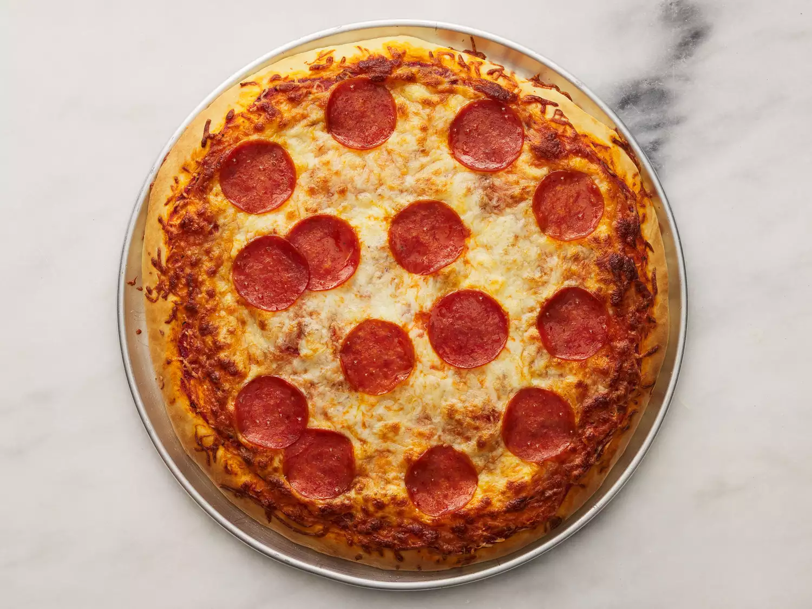

Pepperoni pizza

Description:
This pepperoni pizza recipe
produces a quick and easy classic!
Delicious homemade pizza crust and tomato sauce
have never been easier.
Preparation time: 20min
Cook time: 20min
Servings: 6
Yield: 2 12-inch pizzas
Ingredients:
- 0.5 cup water
- 12 ounce can CONTADINA tomato paste
- 1 teaspoon dried oregano crushed
- 1 teaspoon dried basil, crushed
- 0.5 teaspoon garlic powder
- 0.5 teaspoon onion powder
- 0.5 teaspoon sugar
- 0.5 teaspoon salt
- 0.25 teaspoon black pepper
- 3.25 cups all-purpose flour, or more as needed
- 2 (.25 ounce) envelopes FLEISCHMANN'S
Pizza Crust Yeast or RapidRise Yeast
- 1 tablespoon sugar
- 1.5 teaspoons salt
- 1 ⅓ cups very warm water (120 degrees F to 130 degrees F)
- ⅓ cup oil
- cup shredded mozzarella cheese, or more to taste
- 1 (6 ounce) package HORMEL Pepperoni
Steps:
- Preheat the oven to 425 degrees F (220 degrees C). Grease two 12-inch pizza pans.
- Make sauce: Whisk together water, tomato paste, oregano, basil, garlic powder, onion powder, sugar, salt, and pepper in a medium bowl until smooth. Set aside.
- Make crust: Combine 2 cups flour, yeast, sugar, and salt in a large bowl. Add warm water and oil; mix until well blended, about 1 minute. Gradually add remaining flour, a little at a time, until a soft, sticky dough forms.
- Transfer dough to a floured surface; knead until dough is smooth and elastic, about 4 minutes. Add more flour as needed. (If using RapidRise yeast, let dough rest, covered, for 10 minutes.)
- Divide dough in half. Lightly flour your hands, then pat each piece of dough onto the prepared pizza pans.
- Top dough with sauce, cheese, and pepperoni.
- Bake in the preheated oven until crusts are browned and cheese is bubbly, 18 to 20 minutes. Rotate pizza pans between the top and bottom oven racks halfway through baking.
